Map Author: CTMC
Origin: Map Link
Versions: MC = 1.19.4 - Map = 1.0
Presentation
Mapwreck 6 - Sunset to Sentience is a full length CTM map. It was made under a week with a high amount of participants which I was a part in.
Overview
Mind/Matter - Monument
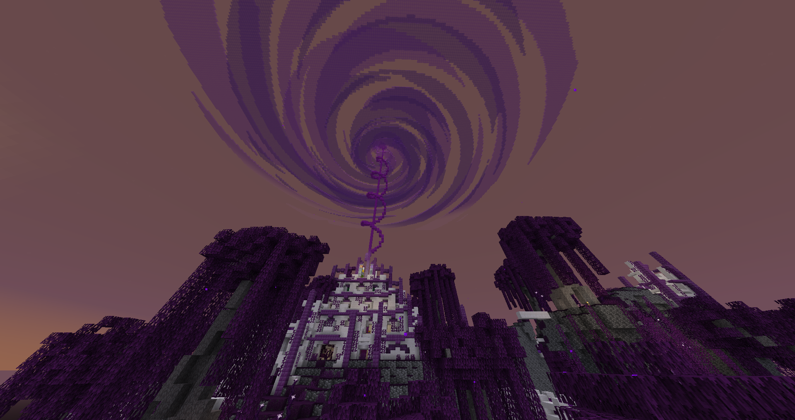
This has to be the hardest start of any map I’ve played, and that includes P2M, Horrifeye and Ragecraft 2. The death pits with the death system meant that your items would end up stuck at the bottom, and no easily accessible wood guaranteed many painful deaths. The spawners were too fast in those conditions. The whole underside was strange, aside some fine loot, it doesn’t lead anywhere and sort of feels like it’s here to punish you from exploring.
However, the crunch pickaxe was so good I kept using it until it broke halfway in the map. The many many custom and strange item shops were a bit overwhelming, and it wasn’t clear enough how traits worked. I did end up using a good amount of gear from it even to the end(maybe too many of them considering how early you get some) like the arrow climbing, rose tinted glasses and the thorns sword. I really liked the progressive structure unlocking and it was ergonomic for moving around.
Scornful Shores - White
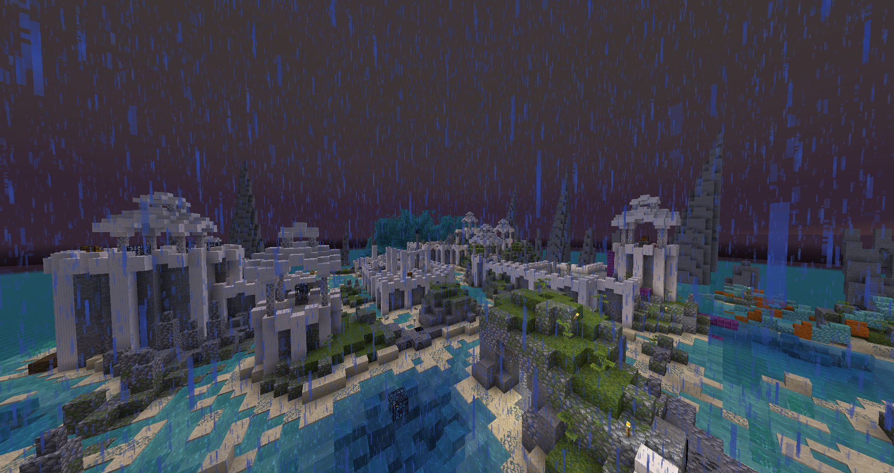
Was nice but too short, the path you arrive from directly starts you on the objective. Also unsure if it was intentional to have the blazes under rain, so they just died on their own.
The Tourist Trap - Orange
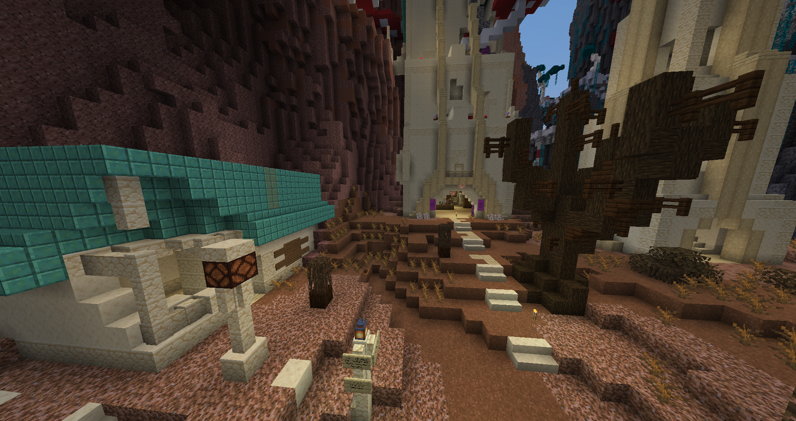
Quite nice, not much to say about it. I failed to find anything with the treasure map.
Mountshroom - Magenta
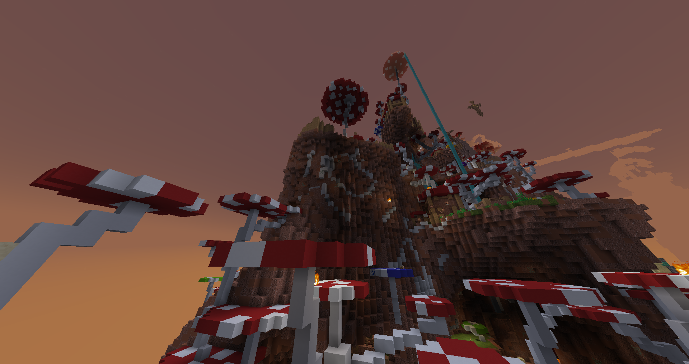
Really cool zone, big mario 64 vibes. The secret switch was a bit too cryptic for me to figure out, sorry. The bonus was too hidden as well. Loved jumping around and the sense of ascension was powerful.
Scarlet Spires - Light Blue
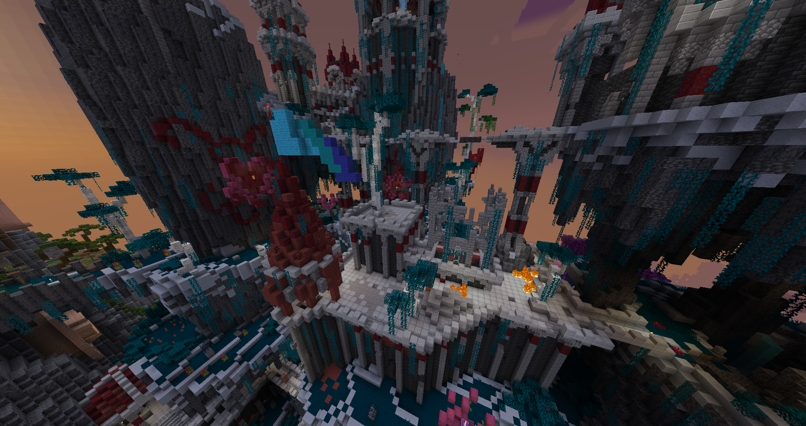
It was a lot less difficult than what I heard about. The zombie swarm was easily manageable with the strength 2 potions and the runic knife doing a lot of work. The metabolic armor suffers from not having enough support to be worth using sadly. The other items are overall fine, some less useful than others. Mycogenesis is truly amazing.
The area itself was surprisingly not labyrinthic because of a clear path to follow to the end, despite not looking like it. Big Veiled Exodus vibes, but that was obvious coming from Baguette team. Aside the custom items, the loot was too filler, but I know what happened back then… Considering that, I’m pleasantly surprised by how well it played.
Marauder’s Bay - Yellow
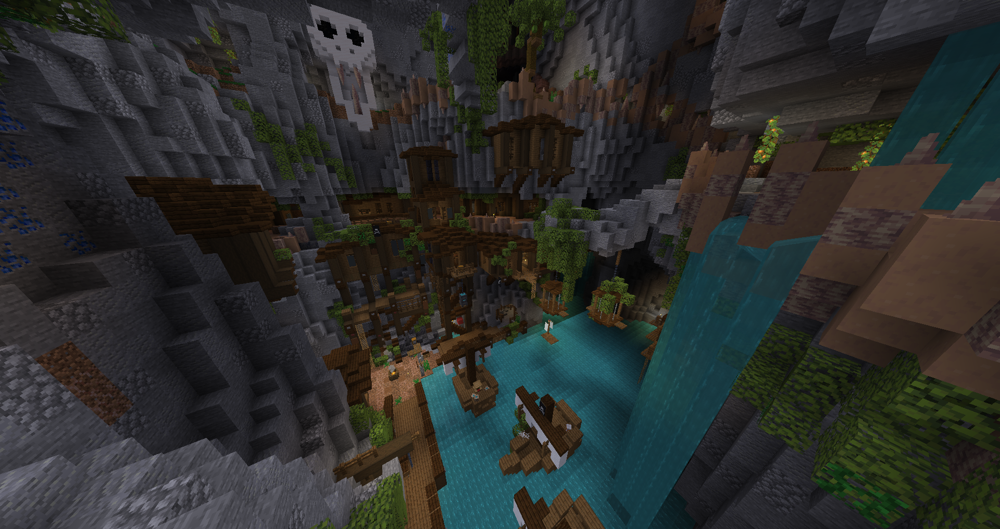
The progression layout was a bit weird (teleporter at the bottom, exit to the next area at the start, wool easily accessible by going forward), it was quite fun to explore for the one slice. Got to use the infiniflask for weakness with my metabolic axe to get on demand absorption.
I liked the vertical drop centered in the area, giving a true pirate bay feel.
Fruition of Chaos - Pink
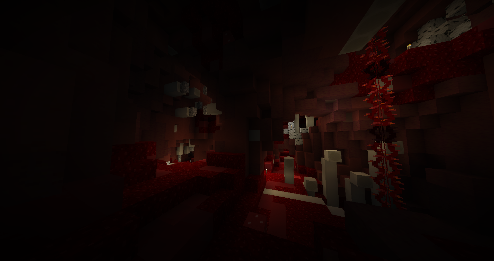
I fell down there and survived thanks to evasion, so I did it before lime. I’m glad the palette was changed during production, because oh dear performance would suffer. It was an easily digestible area. The eyes were fun but the shulkers seemed to not do anything? I was afraid I’d get lost there but it didn’t happen.
The Great Escape was insanely good, so good it was used up till the end.
Revolutionaries’ Hideout - Lime
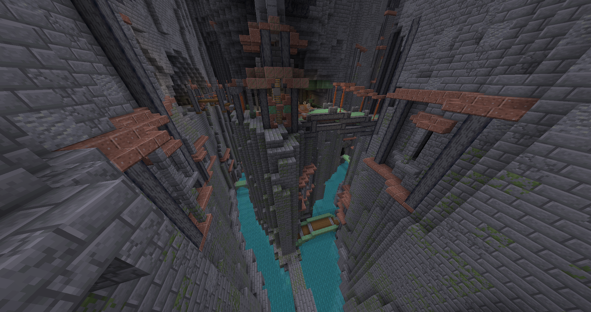
I was getting lost a fair bit, it’s a very webbed area with many paths and entrances. The bonus dungeon was quite large, I remember the chaos during the mapping week, but it’s funny to see it ended up being made in time.
It was a fun area but a severe lack of baguettes. Le peuple a faim!
Artificial Ascent - Gray
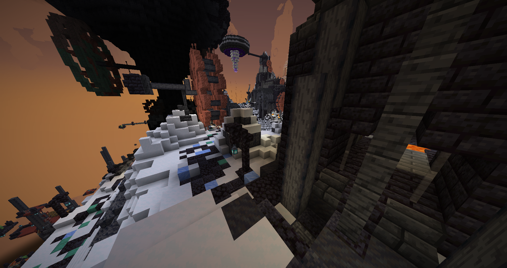
The key aspect was very light, it added something extra fun in the dungeon. The area was shorter overall, not sure why it’s named like that when there’s no ascent, sob. Did I mix up the name with Light Gray? At that point the loot felt weak, except the echo axe, damn it’s good.
Xenoarcheology - Light Gray
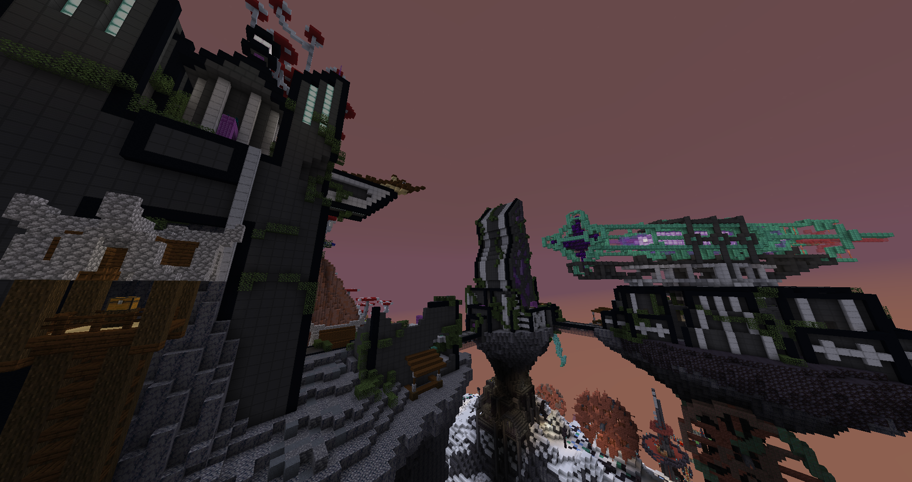
I didn’t realize the new offhand I bought would disable melee attacks, so it was very painful since I wasn’t prepared with many ranged options yet. The area itself was probably fine but I was too struggling to really tell. I only had the Great Escape to fight. The shift between the cliff town and the futuristic facilities felt a bit strange, like it’s different areas.
The Cliffhangers - Cyan
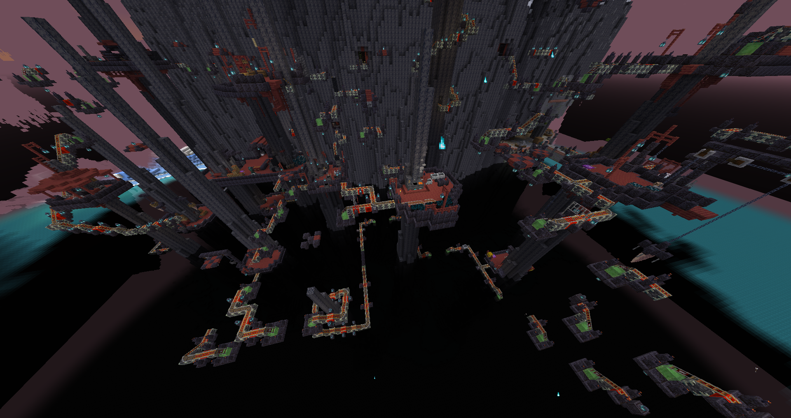
It was unfortunate that the time of day broke the sky color and some mobs, it also happened in some other areas. Other than that, it played a lot better than I thought, with the aside that I really should’ve used a few chests for inventory dumping. The gear and loot sadly was already outclassed, except the possessed longbow which ended up as my main weapon for a while. It was fun to explore around after a year, even if I couldn’t forget where everything was placed.
Serpent’s Awakening - Purple
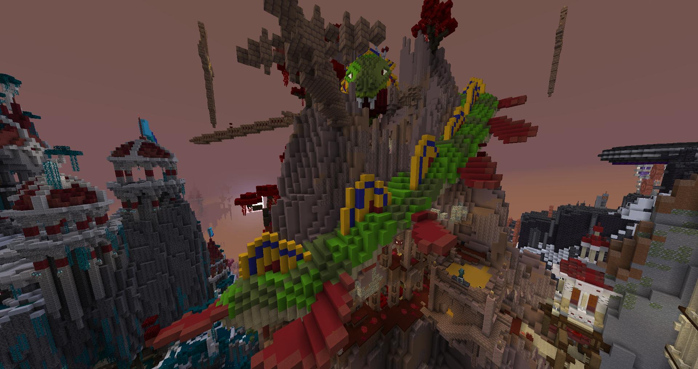
This area was quite an experience. The dragon, while very cool, was very very laggy. It lagged so much I lost the infinity potion and I would fail jumps. I was making full use of the crossbows and my possessed longbow, for once I was glad Pear and Red have an obsession with crossbows. The lubricant bow didn’t do anything sadly, and the resistant spearmen were very annoying and often led to instadeath falls because of lag.
Despite the issues it was still a pretty fun area and the berries were a good bonus to hunt for.
Tomato Towers - Blue
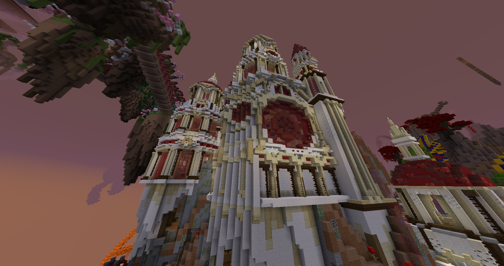
I would get instakilled by the magic vex because of the closed space. Other than that it was a breath of fresh air after the many complex and difficult to navigate areas. It made me realize there was a very low amount of structured interior areas in this map. The loot tomatoes everywhere were probably a bit too much and my poor inventory belched.
Trials of Time - Brown
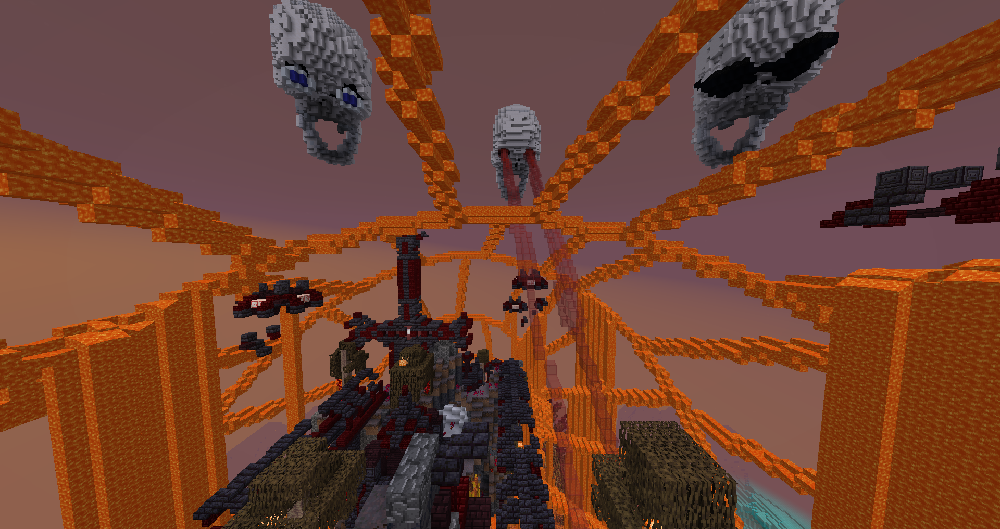
Unfortunate that the lag made the experience go from interesting to unbearable. I died more times at the end than every other area combined, that includes the monument and purple’s instadeath falls. Not a fan of the ultimate creepers considering I almost lost the objective because of them and it made the jumps harder when lag already made it painful. It was a suitable area for my adhd agility 6 build so that part was fun.
Darkstone Peak - Green
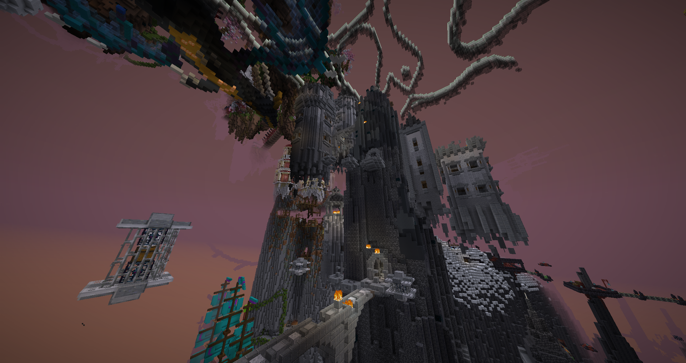
Incredible area for ranged builds, layout was great too. Got an unbreakable infinity power 3 sharpshoot bow, wowowow. Most of the loot is super vanilla though, which makes it suffer compared to the rest of the map. Damage scaling is starting to go a bit off the charts - hi instant death ghasts.
Hyakki Yagyo - Red
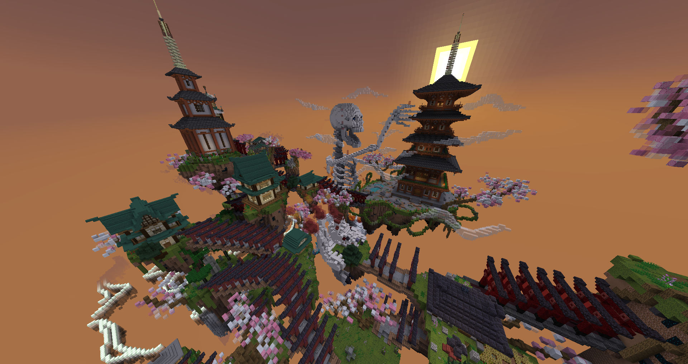
Red looks quite pretty and a flavorful theme. the loot is very power crept sadly, with one surprising exception for the yoichi bow which was incredible despite what I already had. The kitsune archers were interesting, but maybe too easy to counter since the player goes fast at that point. I still remember the skeleton king in devil world finale, and it’s great to see it back well integrated in the level layout!
The Farm - Black
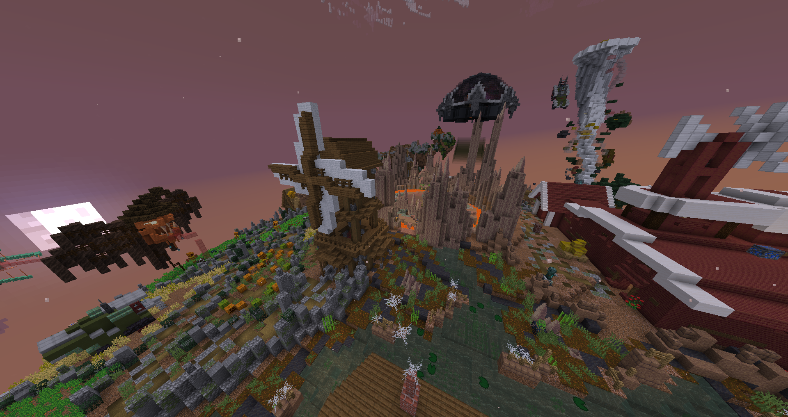
Link area to its full glory. It was quite fun although any melee hit just one shot me at this point. Loot once again felt too filler despite having some fun unique things. Custom models and sounds added to the vibe. The boss was cool even though I had to do it almost hitless if I wanted to win. Aside the boss, I was full on stomper with the purple crossbow and the farm shook in my wake.
Conclusion
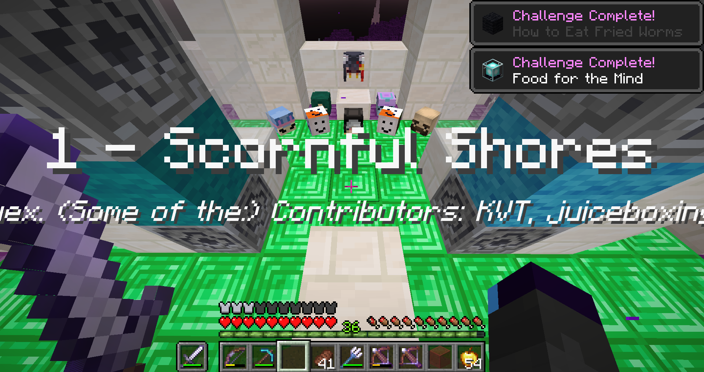
What a map… many experimental things in this one, some good, some less, a lot of overuse.
There was quite a big design gap with areas that had somewhat standard gear and mobs, and some that had everything super custom. The three final areas especially feeling that difference. The gear balance was buried alive, with the monument, purple and blue being major spikes of cornerstone gear. I liked the infiniflasks, although there weren’t many designs exploiting the variety of debuffs, so they felt too weak compared to the explosion of stuff. Which led to inventory management being a pain. Way too much loot and drops, and carto heads/d.i.e.s. overuse exacerbated the issue.
I loved the area title cards, put in creative ways. The less fun part was lag, so much lag. Too much of everything, and most notably all the areas being cramped with each other made it a major problem. I love interconnected areas, but this was too much. It’s telling that I wasn’t able to take most areas in a screenshot without showing other ones. The moment to moment gameplay during the areas was overall quite fun though, probably the best success of the map, good area designs! The bonus hints were too unclear, not even sure if they were hints or area descriptions.
The many issues make me sad, because I know how much effort was given to make and release the map. It was still a fun experience in its own way, but it would have been better without the bad parts. The style was on point, but the substance too rich.
Are mapwrecks forever bound to be cursed? Time will tell.